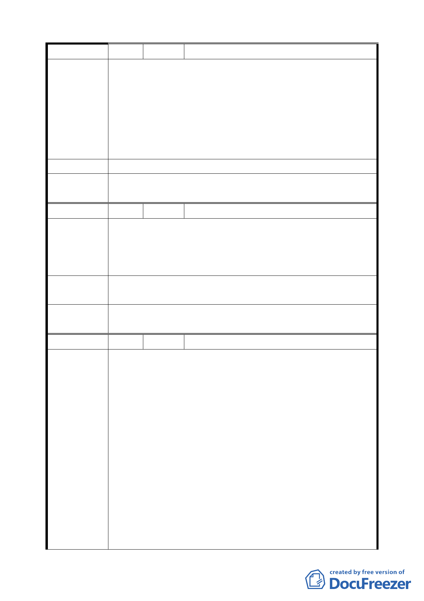

編 號 10 陳情人 闕文智等 27 人
土地標示：南港區經貿段 70、70-1 地號。
本案既變更作「第三種商業區」使用，地主自將依土地最高
最有效利用指導原則規劃，以追求最高經濟效益。如高土地
陳 情 理 由 使用強度之商業規劃確較低土地使用強度之住宅規劃有利，
地主斷無捨長就短之理。實無須加註「台北市土地使用分區
管制規則」所無之限制，其為陳情土地及土地所有權人權益
之維護俱無裨益。
建 議 辦 法 （同陳情理由）
委員會決議
同意發展局所提「為維持高品質商務機能，商業區不宜放寬
作住宅使用」，維持原公展計畫。
編 號 11 陳情人 闕文智
政府基於產業多樣化及發展腹地考量，業於本計畫將 C4、C5
陳情理由
從供「商務文化設施」使用改為供「商務設施」使用，不久
將來必有大量就業人口移入本特定區，應滿足其安居樂業之
需求。
建議辦法
建請本計畫區街廓編號 C4、C5 取消「不得供作住宅使用」
之規定或改為「四樓以下限供商務設施使用」。
委員會決議
同意發展局所提「為維持高品質商務機能，商業區不宜放寬
作住宅使用」，維持原公展計畫。
編 號 12 陳情人 中國信託商業銀行股份有限公司
1.本公司與台灣肥料公司於 C6、C7、C8、C9 等 4 個街廓土
地簽訂 50 年之使用權，期望透過街廓整體開發，以塑造本
區域具指標性建築形象，然這 4 個街廓受南北向都市計劃道
路分割為東西 2 側，至整體規劃彈性倍受限制。經整體評估
若編號 2-1 號道路往北側調整為廣場用地，除可獲得整體規
劃開發效益，尚可創造下列園區優勢：1、提供優於單純線
陳情理由
性通行的都市空間。2、提供有效率且高品質維護管理機制。
2.提供員工教育中心亦為本公司興建企業總部主要需求故考
量受訓員工來自臺灣各地，併而規劃提供員工住宿需求， 然
公告計畫取消原計畫本區位得提供寄宿住宅之允許使用組
別實不符合公司規劃期待，擬請貴單位維持原得提供作為寄
宿住宅之規定或同意適當比例提供員工訓練使用所需之附
屬住宿設施。
3.本次公告針對上述 4 街廓提出『街廓編號 C6、C7、C8、C9
23